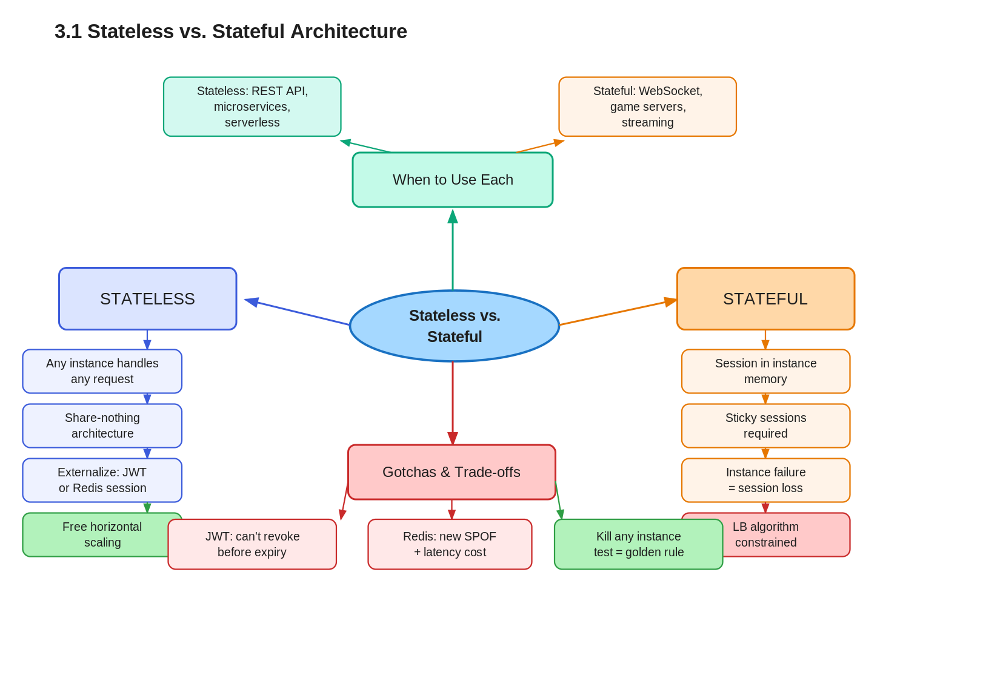

3.1 Stateless vs. Stateful Architecture
01 🎯 Goal of This Subtopic
- Be able to distinguish stateless from stateful systems by their scaling implications, not just their definitions — and explain why the difference matters at load-balancing time.
- Understand why stateless design is the prerequisite for effective horizontal scaling: any instance must be able to handle any request.
- Identify the two primary patterns for externalizing state (Redis session store vs. JWT) and articulate the trade-offs of each in an interview.
- Recognize when a system is "accidentally stateful" — holding session data in instance memory — and know how to refactor it.
- Be able to explain the share-nothing architecture principle and its direct connection to horizontal scalability.
02 ✅ What Mastery Looks Like
- Can take a stateful service design (session stored in-memory) and refactor it into a stateless one by externalizing session to Redis or JWT, explaining every step.
- Can explain why a stateless service can be freely load-balanced while a stateful one requires sticky sessions or session replication — with a concrete example.
- Can articulate the share-nothing architecture principle and connect it directly to why horizontal scaling becomes trivial.
- Can compare server-side sessions vs. JWT on the dimensions of revocability, latency, consistency, and scalability — without notes.
- Can identify in a novel system design whether state is being held in the wrong place and propose the correct externalization fix.
03 🗓️ Study Phases
Work through each phase in order. Don't move to the next until you can honestly tick every item.
- Read DDIA Chapter 6 (Kleppmann) — the "shared-nothing" section is the clearest first-principles explanation of this architecture pattern.
- Read Martin Fowler: "Stateless" — martinfowler.com/bliki/Stateless.html — short, precise, and interview-quotable.
- Watch ByteByteGo: "Session vs Token Authentication" — covers JWT trade-offs vs server-side sessions with scaling implications.
- Read through Sections 5–9 (Core Definition → How It Works) carefully — don't skim.
- Re-read the Cheatsheet (Section 4) and try to recite it from memory after.
- Close the doc — write out the Core Definition from memory, then compare.
- Explain First Principles out loud without notes — what problem does this solve and why?
- Reconstruct the How It Works mechanics step by step from memory.
- Restate each Trade-off row in your own words — if you can't explain the cost, you don't own it yet.
- Go through Real-World System Examples (Section 10) — verify each claim independently.
- Practice the Interview Application (Section 12) out loud — say the trigger phrases and your response as if in a live interview.
- Work through Common Misconceptions (Section 13) — for each, explain why the misconception is wrong, not just that it is.
- Trace the Relationships to Other Concepts (Section 14) — can you explain each connection without looking?
- Answer every Self-Check Quiz question (Section 15) out loud without looking at your notes.
- Recite the Cheatsheet (Section 4) from memory — if you can't, re-do Phase 2.
- Tick off items in What Mastery Looks Like (Section 2) — only check a box if you can demonstrate it on demand.
- Teach this concept out loud to an imaginary interviewer for 2 minutes without hesitation or notes.
04 📋 Cheatsheet
Everything you need to recall this concept in 30 seconds — for quick review before an interview.

05 🧠 Core Definition
06 📦 Core Concepts
Session State — The Defining Difference
Session state is any data the server holds about a specific client between requests: who is logged in, what is in their cart, where they are in a multi-step flow. A stateless service has none of this in instance memory — it either derives all context from the request itself (JWT, cookies carrying data) or fetches it from a shared external store. The moment a server holds any per-client data in local memory, it becomes stateful and load-balancing becomes constrained.
Share-Nothing Architecture
In a share-nothing architecture, every processing node is fully independent — no shared in-memory state, no shared disk, no shared connections to other nodes. Each node can fail or be replaced without affecting any other. This is the architectural principle that makes horizontal scaling trivial: adding a new node requires no coordination with existing nodes. The alternative — shared memory or shared disk between nodes — creates coupling that limits how many nodes you can add and how fast you can fail over.
Externalized State Store
Externalizing state means moving session or other per-client data out of the instance and into a dedicated shared store (typically Redis or Memcached). The instance becomes a stateless processor: it receives a request, fetches needed context from the external store, does its work, writes any updates back, and returns a response — holding nothing locally afterwards. The external store becomes the system of record for all mutable client state.
JWT as Stateless Session Token
A JSON Web Token (JWT) encodes the session context (user ID, roles, expiry) directly in the token, signed by the server. The client stores the JWT and presents it with every request. The server validates the signature without any external lookup — making authentication fully stateless. The trade-off: the server cannot invalidate a JWT before it expires without maintaining a token blocklist, which reintroduces state.
Sticky Sessions as a Workaround
Sticky sessions (session affinity) configure the load balancer to always route requests from the same client to the same backend instance. This makes a stateful service work behind a load balancer — but it does not solve the problem; it papers over it. Load distribution becomes uneven (popular users dominate one instance), and instance failure destroys sessions. Sticky sessions are a sign that a service needs to be refactored to be stateless, not a long-term solution.
07 🔍 First Principles — Why Does This Exist?
Before stateless design was a recognized pattern, the default was to store session data in the web server's local memory — cheap, fast, and simple for a single server. The problem became acute the moment you added a second server to handle load. Server A held User X's session. The load balancer sent User X's next request to Server B. Server B had no session for User X — the user was suddenly logged out, or their shopping cart was empty.
The "fix" was sticky sessions: configure the load balancer to always route User X back to Server A. But now Server A carries more load than Server B (not all users are equally active), Server A becomes a single point of failure for User X, and you cannot replace Server A without destroying every session it holds. Horizontal scaling — the whole point of adding servers — is now fundamentally hobbled.
The root cause was mixing two concerns in the same place: mutable per-client state and stateless request processing logic. Stateless architecture separates them: processing logic lives in commodity, replaceable instances; mutable state lives in a dedicated, replicated, independently scalable store. Now you can scale the processing tier freely — add instances, remove instances, replace instances — without touching the state.
08 🗺️ Mental Models
Model 1: The ATM vs. Bank Teller
An ATM is stateless: you insert your card (carry your own context), it fetches your account from the bank's central database (external store), processes your transaction, and forgets you the moment you leave. Any ATM handles any customer — there is no "your ATM." A bank teller is stateful: they remember your name, keep notes on their desk about your account, and you need to come back to the same teller for continuity. Scaling means adding tellers, but now you need routing logic to send each customer to their teller — and if that teller calls in sick, your context is gone.
Model 2: The "Kill Any Instance" Test
If you can terminate any running instance right now and the system continues working correctly for all active users — the service is stateless. If killing one instance means any user loses their session or in-progress work, you have a stateful dependency hiding somewhere. Run this thought experiment on every service in your design. It is the fastest way to find accidental statefulness.
Model 3: The Backpack vs. The Locker
A stateless system gives every client a backpack: they carry everything they need with them on every request (JWT, cookie, request parameters). The server needs no memory of them. A stateful system gives each client a locker at the server: their stuff stays there between visits, but they must always go back to the same locker room. Stateless = client carries state. Stateful = server stores state.
09 ⚙️ How It Works — Mechanics
Stateless Happy Path (JWT-based)
- Client logs in — server validates credentials, creates a signed JWT containing
{userId, roles, exp}, returns it. - Client stores JWT and sends it as
Authorization: Bearer <token>on every subsequent request. - Load balancer routes to any available instance using any algorithm (round robin, least connections).
- Instance validates JWT signature locally (no DB call), extracts userId/roles from payload.
- Instance fetches dynamic data from the database, processes, returns response.
- Instance holds zero per-client state after the response is sent.
Stateless Happy Path (Redis Session)
- Client logs in — server creates a session object, stores it in Redis under a UUID key (
session:abc123), sets a TTL. - Server returns a cookie containing only
session_id=abc123. - On subsequent requests, any instance reads the cookie, does
Redis GET session:abc123in ~0.5ms. - Instance processes request using the fetched session, writes updates back to Redis.
- Instance holds zero per-client state after the response.
Failure Handling
| Scenario | Behaviour on Instance Death |
|---|---|
| Stateless (JWT) | Next request goes to another instance, validates the same JWT identically. Zero data loss. |
| Stateless (Redis) | Instance death is invisible. Redis downtime makes sessions unavailable — Redis must be HA (Sentinel or Cluster). |
| Stateful (no externalization) | Session loss for all clients on that instance. Recovery requires session replication or forced re-login. |
The JWT Revocation Problem
JWT validation requires no external state — but revocation does. If a user logs out or their account is suspended, the JWT is still valid until its exp timestamp. Standard mitigations: (1) short expiry (15–60 min) with refresh tokens, (2) a Redis blocklist of revoked jti (JWT ID) values checked on each request — which reintroduces a small amount of state but is far more scalable than full server-side sessions.
10 🏭 Real-World System Examples
| System | How This Concept Applies | Notes |
|---|---|---|
| AWS Lambda | Stateless by design — each invocation is independent; all state must live in DynamoDB, S3, or ElastiCache. | Cold starts are the cost of zero instance affinity. |
| Kubernetes pods (app tier) | App pods are stateless and ephemeral; scheduler can reschedule to any node; StatefulSets for stateful workloads. | Enables seamless rolling deployments with zero session loss. |
| Netflix API / Zuul | Stateless service tier; JWT-based auth so any node validates any request; per-user state in EVCache. | Handles millions of RPS across thousands of stateless instances. |
| Traditional Rails apps (pre-2008) | Default session stored in server memory — broke under load balancing; migration to Redis was required. | A historical lesson in accidental statefulness. |
| Stripe API | Fully stateless API tier — each request is independently authenticated via HMAC; idempotency keys stored in DB. | Even payment-critical systems can be fully stateless with good external store design. |
11 ⚖️ Trade-offs
| ✅ Benefit | ❌ Cost / Limitation |
|---|---|
| Any instance handles any request — free horizontal scaling with any LB algorithm. | Every request must carry or fetch its context, adding payload size (JWT) or external store latency (~0.5–1ms Redis). |
| Instance failure is non-catastrophic — no session loss, just retry on another instance. | External state store (Redis) becomes a new critical dependency and SPOF if not made HA. |
| Zero-downtime rolling deploys — drain and replace any instance with no affinity to break. | JWT-based auth cannot revoke tokens before expiry without a blocklist, creating a revocation window. |
| Simplified operations — no session replication, no affinity configuration in the LB. | Externalizing state adds operational complexity: you now run, monitor, and back up Redis or Memcached. |
12 🎯 Interview Application
When an interviewer asks / says:
- "How would you handle session management at scale?"
- "The system needs to scale horizontally — how do you make that work?"
- "What happens to users if one of your app servers goes down?"
- "How do you design the authentication layer?"
What you say / do:
In requirements or high-level design, when drawing the application tier, explicitly state: "I'll design the app servers to be stateless — sessions externalized to Redis, authentication via short-lived JWTs — so the load balancer can route any request to any instance with no affinity requirement. This means I can scale the app tier horizontally by just adding instances." This signals architectural maturity early and sets up clean load balancing discussion in the next breath.
The trade-off statement (memorize this):
13 ⚠️ Common Misconceptions & Gotchas
14 🔗 Relationships to Other Concepts
Topic 2 — CAP Theorem: Externalizing state to Redis introduces consistency trade-offs; Redis replication lag means sessions read from a replica may be stale after a write.
Topic 4 — Load Balancing: Stateless services make every routing algorithm viable. Without statelessness, you're forced into IP hash or cookie affinity, which breaks even distribution.
Topic 4.6 — Sticky Sessions: Sticky sessions exist precisely because services became stateful. Understanding why they're a problem is only fully clear once you've internalized what stateless means.
15 🧪 Self-Check Quiz
Answer each question out loud without looking. If you hesitate, you haven't internalized it yet.
16 📚 Further Reading
- DDIA Chapter 6 — Kleppmann, Designing Data-Intensive Applications. The shared-nothing section is the clearest first-principles explanation of why this pattern exists.
- Martin Fowler: "Stateless" — martinfowler.com/bliki/Stateless.html — short, precise, and directly quotable in an interview.
- ByteByteGo: "Session vs Token Authentication" — YouTube / bytebytego.com — JWT vs server-side session trade-offs with scaling diagrams.
- AWS: "Building serverless applications with AWS Lambda" — Lambda as the canonical stateless compute model; forces you to confront what state you were relying on.
- Redis: "Redis as a session store" — redis.io/docs — practical implementation of the externalized session pattern.
17 ✍️ My Notes
Personal observations, things that confused you, analogies that helped. This space is yours.